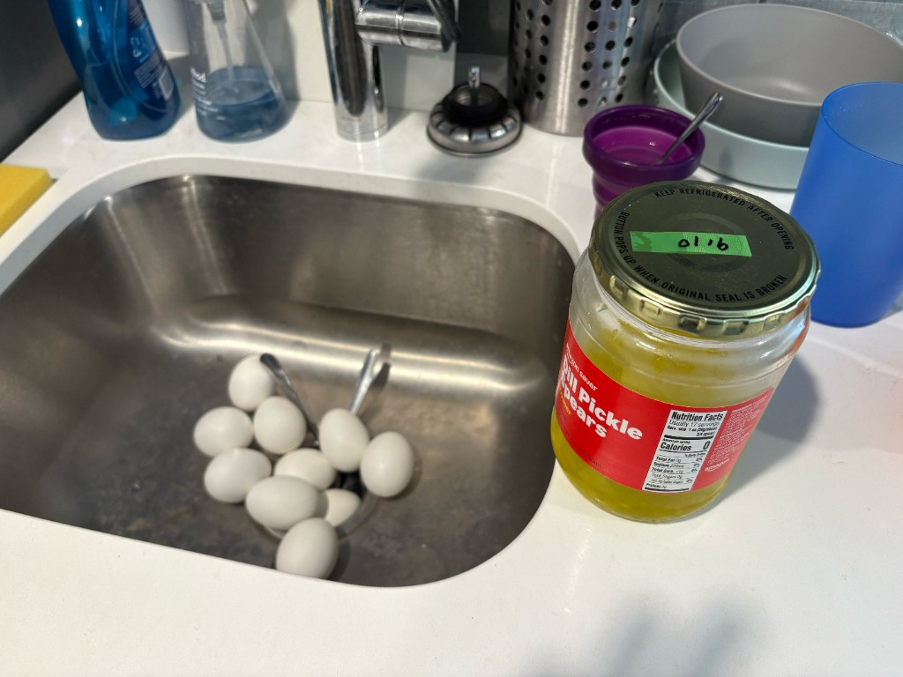
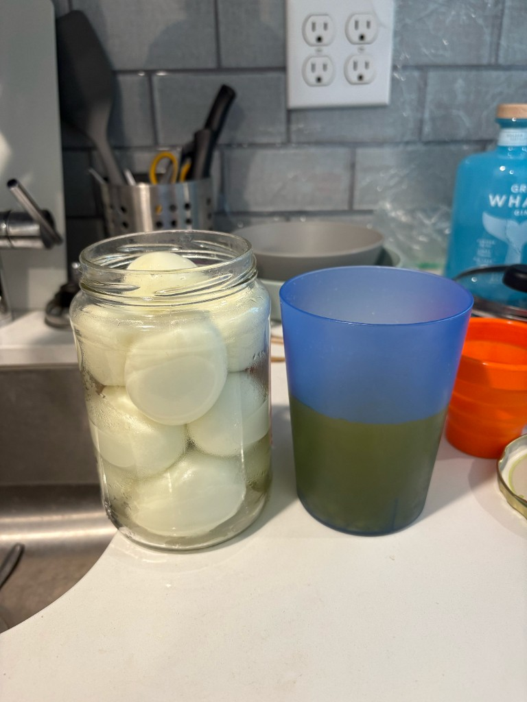
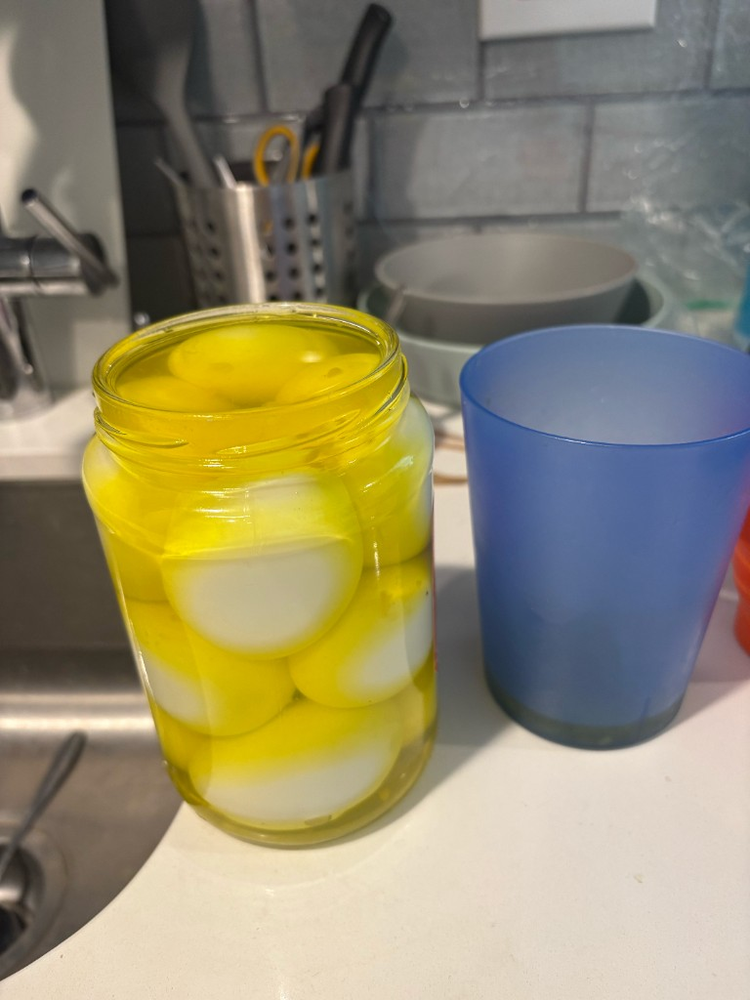
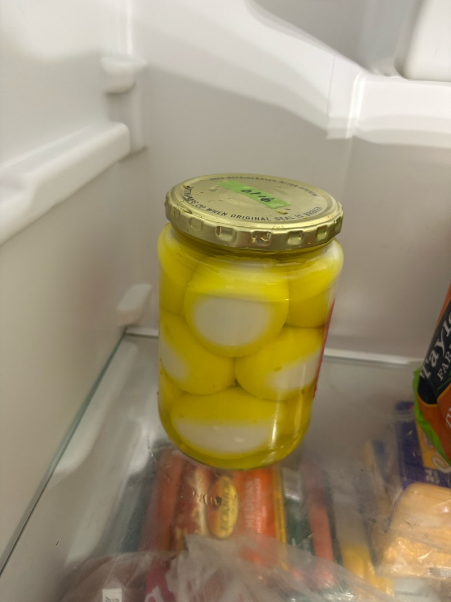
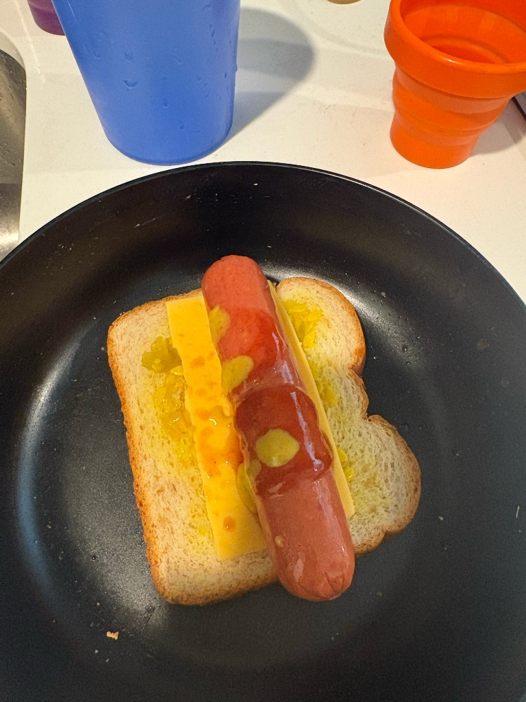
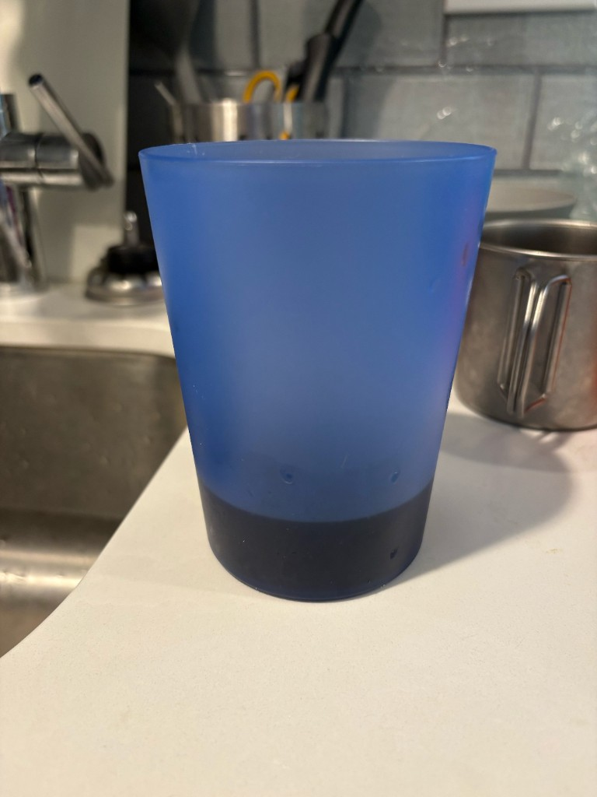

The spears left. The juice stayed. The juice had plans.
At some point you will finish a jar of dill pickle spears and stare at the leftover brine like it personally wronged you. Do not dump it. That liquid already did a whole career as a pickle spa — salty, dill-y, slightly aggressive — and it is still hired. Its next job is eggs.
I boiled 10 XL eggs, cooled them down in the sink like a person with no dignity, and prepared to jam 9 of them into the 24 fl oz jar. The tenth egg became a snack tax. Physics said nine was the honest answer; the jar agreed.

Important order of operations: pour the juice out into a cup first, then squeeze the eggs in. If you drop eggs into a full jar of brine, you get a splash zone, a sticky counter, and a brief moment of regretting every life choice that led here. Empty jar, pack eggs, then pour the brine back over them.

Top them up until the uppermost egg is fully submerged. A small air pocket under the lid is fine — you are not launching a submarine — but the eggs themselves should be swimming. The juice is what keeps them preserved; dry spots on top are how you get sad, unevenly pickled losers.

Fridge them. Label the lid with the date so you do not invent a mystery jar later. After a day or two the whites go that neon deli-case yellow and start tasting like they have opinions. Keep them up to about two weeks — cold, covered, and within the window of “still a good idea.” If they smell like a dare, they are no longer dinner.

Whatever brine is left in the cup — seeds, dill bits, the scrapings of a former pickle civilization — is not trash. That is 100% recycled relish: nothing new bought, nothing wasted, just the jar finishing its own story. I put it on a hot dog sandwich cuz I don't have buns. Peak civilization.

Recap: eat the spears, pour the juice into a cup, pack the eggs, drown the top one, fridge for up to two weeks, turn the seeded leftovers into relish. Pouring the brine down the drain is the only recipe step that makes you the villain.
Secret drink: when the cup is mostly empty but still smells like pickle juice, do not wash it yet. Pour in Dr Pepper. The ghost of the brine hangs around just enough to make something weirdly good. Tell no one at the office. Or tell everyone.
